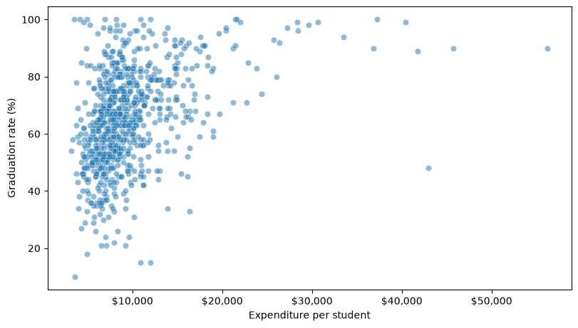
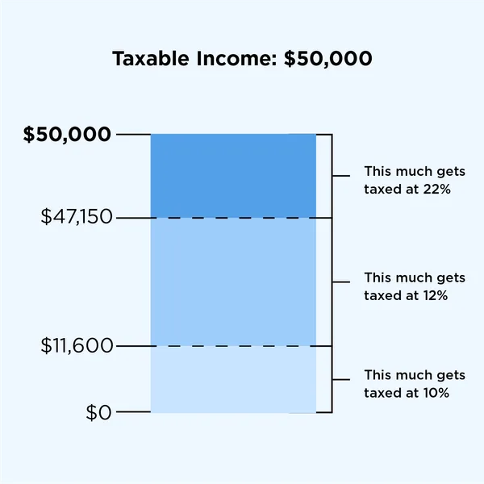
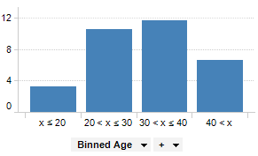
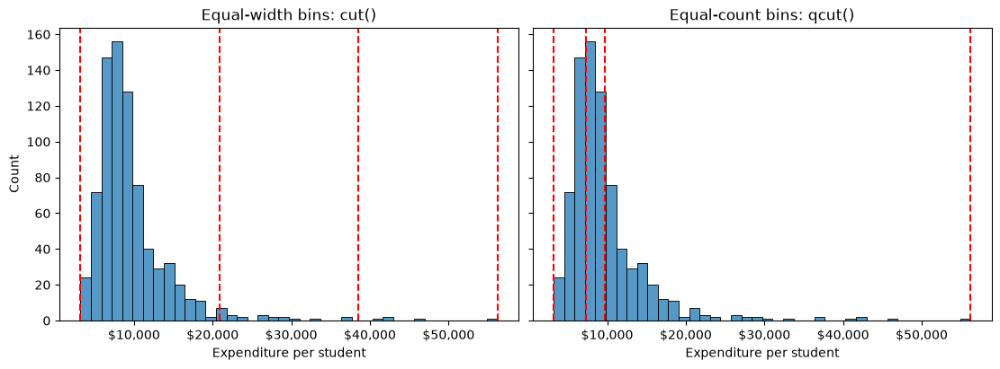
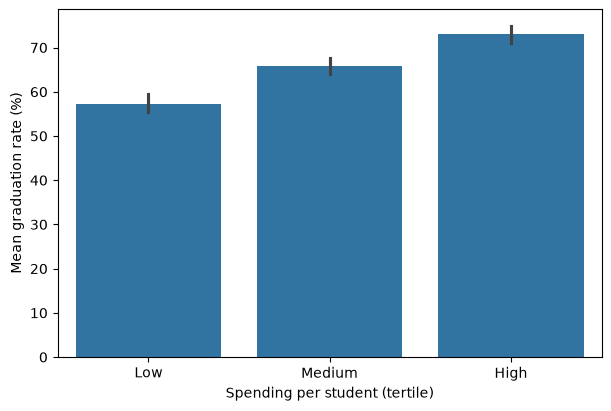
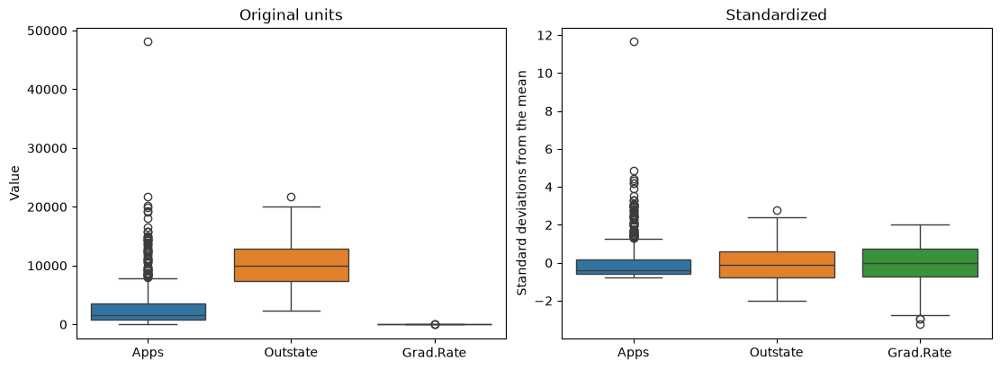

import numpy as np
import pandas as pd
import matplotlib.pyplot as plt
import seaborn as sns11 Data Preparation
Data Cleaning fixed what was wrong with the data: gaps, repeats, and values that could not be true. Clean data is not always in the form an analysis needs, though. A comparison may be clearer between a few groups than across hundreds of distinct values. A method may need numbers where the data has categories. Two columns may need to be put on a common scale before they can be combined fairly.
This chapter is about reshaping clean data for the question you want to ask, without changing what it says. Each preparation step is a choice — how many groups and where their edges fall, how to turn a category into numbers, which columns to rescale — and each choice changes what the next step can see. The habit to build is checking the result of every choice before you trust it.
By the end of this chapter you should be able to:
- Bin a numeric column with
pd.cut()(equal widths, or edges you choose) andpd.qcut()(equal counts), and check the bin counts before comparing groups. - Compare an outcome across bins with
groupby()andmean(), and describe the pattern as an association, naming what else could explain it. - Encode categories as numbers: a code with
map()when the categories have a meaningful order, and one indicator column per category withpd.get_dummies()when they do not. - Rescale numeric columns with min–max scaling and standardization, and say which columns must not be rescaled.
Complete the practice activity after the worked examples.
11.1 Set Up Your Chapter Files
Download the Data Preparation practice kit. Extract stat303-data-preparation inside the chapters folder of your stat303-1 course folder, open stat303-1 in VS Code, and select the course environment. The terminal opens in stat303-1, so move it into the kit with cd chapters and then cd stat303-data-preparation before you render the activity.
stat303-1/
├── .venv/
├── assignments/
└── chapters/
└── stat303-data-preparation/
├── data_preparation_examples.ipynb
├── activity11.ipynb
├── README.md
└── data/
└── College.csvRun data_preparation_examples.ipynb for the lesson and complete activity11.ipynb for your own activity report, with stat303-data-preparation as the notebook working folder. The data is read with the relative path "data/College.csv", so the notebooks find it only when that folder is the working folder.
Environment check: This chapter uses NumPy, pandas, matplotlib, and seaborn, all of which are already in the course environment. If an import fails, check the selected notebook kernel first: it must be the course environment, stat303-1/.venv, as in Project Environments, Packages, and File Paths.
11.2 The data
This chapter uses the college data from the outlier section of Data Cleaning: 777 US colleges, with the college names as row labels. That chapter found one impossible value, a graduation rate of 118%, and decided to mark it as missing. The same decision is applied here, before anything else:
college = pd.read_csv("data/College.csv", index_col=0)
college.loc[college["Grad.Rate"] > 100, "Grad.Rate"] = np.nan
print(college.shape)
college[["Private", "Apps", "Top10perc", "Outstate", "Expend", "Grad.Rate"]].head()(777, 18)| Private | Apps | Top10perc | Outstate | Expend | Grad.Rate | |
|---|---|---|---|---|---|---|
| Abilene Christian University | Yes | 1660 | 23 | 7440 | 7041 | 60.0 |
| Adelphi University | Yes | 2186 | 16 | 12280 | 10527 | 56.0 |
| Adrian College | Yes | 1428 | 22 | 11250 | 8735 | 54.0 |
| Agnes Scott College | Yes | 417 | 60 | 12960 | 19016 | 59.0 |
| Alaska Pacific University | Yes | 193 | 16 | 7560 | 10922 | 15.0 |
The columns used most below are Expend (instructional expenditure per student, in dollars), Grad.Rate (graduation rate, as a percentage), Outstate (out-of-state tuition), Top10perc (the percentage of new students from the top 10% of their high-school class), and Private ("Yes" or "No").
The question running through the first section is a simple one: do colleges that spend more per student graduate more of their students?
11.3 Bin a numeric column
A scatter plot answers the spending question for every college at once, and with 777 noisy points the answer is hard to read:
fig, ax = plt.subplots(figsize=(8, 4.5), layout="constrained")
sns.scatterplot(data=college, x="Expend", y="Grad.Rate", alpha=0.5, ax=ax)
ax.xaxis.set_major_formatter("${x:,.0f}")
ax.set(xlabel="Expenditure per student", ylabel="Graduation rate (%)")
plt.show()
Each college is one point, and Expend alone has hundreds of distinct values. The standard way to make a comparison like this readable is to bin the column.
11.3.1 What binning is, and why it helps
Data binning groups the values of a numeric column into a few intervals, called bins, and records which bin each value falls into instead of the value itself. Think of it as sorting a long list of numbers into a few labelled jars. Binning simplifies a column so that patterns become visible and comparisons become easy to state.
Why bin?
- Easier interpretation. Instead of hundreds of distinct values, you summarize a handful of groups. Rather than every possible age, a report might use the age groups “under 20”, “20 to 30”, “30 to 40”, and “40 and over”.
- Targeted decisions. Groups support decisions made group by group. A doctor may recommend different treatments for children, adults, and older adults, each defined by an age bin.
- Less noise. Grouping smooths random fluctuation. Daily sales may jump around, while weekly or monthly totals show the trend.
Binning in the real world.
- Tax brackets. Income is binned into ranges that are taxed at different rates. For a single filer in 2024, the first $11,600 of taxable income is taxed at 10%, the part from $11,601 to $47,150 at 12%, and the part above that at 22% or more.
- Customer segments. A credit card company may bin customers into high, medium, and low spenders and market to each group differently.
- Medical guidelines. Vaccine recommendations often depend on age bins, such as under 12, 12 to 18, 18 to 65, and over 65.


Here, binning Expend into low, medium, and high spending lets you compare one summary per group instead of reading a cloud of points. The price is detail: once a college is “medium”, the exact dollar figure is gone. That makes the choice of bins, how many and where their edges fall, the important decision. There are three common ways to make it, and the rest of this section works through each:
| Method | pandas | Bins have | Suits |
|---|---|---|---|
| Equal-width | pd.cut(s, k) |
The same width, any count | Values spread fairly evenly |
| Equal-count (quantile) | pd.qcut(s, k) |
The same count, any width | Skewed columns; groups you want to compare |
| Custom | pd.cut(s, bins=[...]) |
Edges you choose | Thresholds that mean something |
11.3.2 Equal-width bins with cut()
pd.cut(column, 3) divides the range of a column, from its minimum to its maximum, into 3 intervals of equal width, and returns which interval each value falls into. value_counts(sort=False) lists the intervals in order with their counts:
pd.cut(college["Expend"], 3).value_counts(sort=False)Expend
(3132.953, 20868.333] 751
(20868.333, 38550.667] 21
(38550.667, 56233.0] 5
Name: count, dtype: int64Each interval is written (left, right]: the round bracket means the left edge is excluded and the square bracket means the right edge is included, so every value belongs to exactly one bin. (The lowest edge sits slightly below the minimum so that the minimum is included.)
The widths are equal, about $17,700 each, but the counts are not: 751 colleges in the first bin, 21 in the second, and 5 in the third. Expend is strongly right-skewed, as Data Cleaning showed, so a few very high spenders stretch the range and the top two bins cover almost no one. Comparing group means anyway gives a misleading answer:
width_level = pd.cut(college["Expend"], 3, labels=["Low", "Medium", "High"])
college.groupby(width_level)["Grad.Rate"].mean().round(1)Expend
Low 64.6
Medium 90.6
High 83.2
Name: Grad.Rate, dtype: float64labels= names the bins in order, from lowest to highest. The groupby(...).mean() pattern is the one introduced in Data Cleaning, here grouping by the bin each college falls into.
Read naively, the table says medium spenders graduate the most students. But “medium” and “high” are 21 and 5 colleges; a single unusual school moves either mean by several points. Always check the counts before comparing bins. Equal-width bins suit columns whose values are spread fairly evenly. For a skewed column they put nearly everything in one bin.
11.3.3 Equal-count bins with qcut()
pd.qcut(column, 3) does the opposite: it places the edges at the column’s quantiles, so each bin holds roughly the same number of rows. Three equal-count bins are called tertiles:
college["expend_level"] = pd.qcut(college["Expend"], 3, labels=["Low", "Medium", "High"])
college["expend_level"].value_counts(sort=False)expend_level
Low 259
Medium 259
High 259
Name: count, dtype: int64Each bin now holds 259 colleges. The edges fall at about $7,334 and $9,682, the 33rd and 67th percentiles. Drawing both sets of edges on the distribution shows the difference between the two methods:
width_edges = np.linspace(college["Expend"].min(), college["Expend"].max(), 4)
count_edges = college["Expend"].quantile([0, 1/3, 2/3, 1])
fig, (ax_width, ax_count) = plt.subplots(1, 2, figsize=(11, 4), sharey=True,
layout="constrained")
for ax, edges, title in [(ax_width, width_edges, "Equal-width bins: cut()"),
(ax_count, count_edges, "Equal-count bins: qcut()")]:
sns.histplot(data=college, x="Expend", bins=40, ax=ax)
for edge in edges:
ax.axvline(edge, color="red", linestyle="--")
ax.xaxis.set_major_formatter("${x:,.0f}")
ax.set(xlabel="Expenditure per student", title=title)
plt.show()
The red lines are the bin edges. np.linspace(low, high, 4) gives four equally spaced numbers, which are the edges cut() used, and quantile([0, 1/3, 2/3, 1]) gives the edges qcut() used. ax.axvline(x) draws a vertical line at x across the panel.
On the left, the equal-width edges are evenly spaced, so almost every college lands left of the first interior line. On the right, the equal-count edges crowd into the dense part of the distribution, so the bins are narrow where colleges are crowded and wide where they are sparse. The 5 highest spenders no longer get a bin of their own; they are simply part of “High”. That is a third way of handling extreme values, alongside the removing and capping in Data Cleaning: an extreme value can only move its bin’s mean, not create an empty bin.
Comparing graduation rates across the tertiles, with the mean for each bar:
fig, ax = plt.subplots(figsize=(6, 4), layout="constrained")
sns.barplot(data=college, x="expend_level", y="Grad.Rate", ax=ax)
ax.set(xlabel="Spending per student (tertile)", ylabel="Mean graduation rate (%)")
plt.show()
Graduation rates rise steadily, from 57.3% to 65.9% to 73.0%. As in Data Visualization I, barplot computes the mean of each group for you, the same groupby(...).mean() as above, and the line on each bar is a 95% confidence interval: none of the three intervals overlap. The pattern the scatter plot hinted at is now easy to read, and each bar is backed by 259 colleges.
11.3.4 Bins you choose
Sometimes the edges should come from the question rather than from the data: a budget category, a policy threshold, a grading cutoff. Pass cut() a list of edges instead of a number of bins:
edges = [0, 10_000, 20_000, np.inf]
labels = ["Under $10K", "$10K to $20K", "$20K and over"]
budget_level = pd.cut(college["Expend"], bins=edges, labels=labels, right=False)
budget_level.value_counts(sort=False)Expend
Under $10K 535
$10K to $20K 214
$20K and over 28
Name: count, dtype: int64Three details make custom bins behave:
np.infis infinity, so the last bin has no upper limit and no college can fall outside it. Any value outside the edges you give would becomeNaN.right=Falsecloses each interval on the left instead,[left, right), so a college spending exactly $10,000 lands in “$10K to $20K”, which matches how the labels read. Writing10_000with an underscore is the same number as10000, just easier to read.labels=needs one name per bin: three bins from four edges.
These bins answer a budgeting question — how many colleges spend over $20,000 per student? 28 — at the cost of uneven group sizes, the same trade-off as equal-width bins.
qcut() accepts a list too, but its list holds quantiles rather than values. This splits colleges at the median and the 90th percentile, to set the top 10% of spenders apart:
spending_group = pd.qcut(college["Expend"], [0, 0.5, 0.9, 1],
labels=["Bottom half", "50th to 90th percentile", "Top 10%"])
spending_group.value_counts(sort=False)Expend
Bottom half 389
50th to 90th percentile 310
Top 10% 78
Name: count, dtype: int64The list runs from 0 to 1 and the bins hold 50%, 40%, and 10% of the colleges: 389, 310, and 78. Use cut() with a list when the edges are values that mean something, and qcut() with a list when they are shares of the data.
11.3.5 An association, not a recipe
The tertile table invites a recommendation: a college in the low tertile that moved into the high one could expect its graduation rate to rise by about 16 points. The data cannot support that. It shows that colleges which spend more also graduate more students, not that spending more causes higher graduation. High-spending colleges differ in other ways too, and one of them is easy to check:
college.groupby("expend_level")[["Grad.Rate", "Top10perc"]].mean().round(1)| Grad.Rate | Top10perc | |
|---|---|---|
| expend_level | ||
| Low | 57.3 | 17.6 |
| Medium | 65.9 | 24.9 |
| High | 73.0 | 40.1 |
High-spending colleges admit far more students from the top 10% of their high-school class: 40% against 18%. Students who arrive better prepared are more likely to graduate wherever they enrol, so selectivity alone could produce much of the pattern. Binning makes a pattern easier to see; it does not make it a cause. Describe what you find as an association — “colleges in the highest spending tertile had a mean graduation rate 16 points higher than those in the lowest” — and name what else could explain it.
11.4 Encode categories as numbers
The binned spending levels you just made are categories, and so is Private. Working with them in most analyses requires one more step: turning the categories into numbers.
Why encode categorical variables?
- Most statistical and machine-learning methods — correlation, regression, k-nearest neighbors, k-means — do arithmetic on their inputs, so every input must be a number.
- Categorical columns often carry some of the most useful information in a dataset, such as whether a college is public or private. Leaving them out because they are text throws that information away.
- The way you turn categories into numbers is itself a claim. Codes 0, 1, 2 assert an order and equal steps, so a poor encoding can mislead a model even when the code runs without errors.
Asking pandas how Private relates to graduation rates shows the problem at once:
try:
college["Private"].corr(college["Grad.Rate"])
except ValueError as error:
print("ValueError:", error)ValueError: could not convert string to float: 'Yes'A correlation is computed from arithmetic on both columns, and "Yes" cannot take part in arithmetic. The try/except lets the notebook show the error and keep running, as in NumPy Fundamentals. How you turn categories into numbers depends on whether they have an order.
11.4.1 Two categories: one 0/1 column
A column with only two values becomes a single column of 0s and 1s. map(), from Pandas Intermediate, replaces each value using a dictionary:
college["private_code"] = college["Private"].map({"No": 0, "Yes": 1})
college[["Private", "private_code"]].head()| Private | private_code | |
|---|---|---|
| Abilene Christian University | Yes | 1 |
| Adelphi University | Yes | 1 |
| Adrian College | Yes | 1 |
| Agnes Scott College | Yes | 1 |
| Alaska Pacific University | Yes | 1 |
college["private_code"].value_counts()private_code
1 565
0 212
Name: count, dtype: int64The counts match the original column, 565 private colleges and 212 public ones, which is the check worth making after any encoding: a value missing from the dictionary would have become NaN. A 0/1 column is easy to read: its mean, college["private_code"].mean(), is the proportion of private colleges.
The correlation that failed a moment ago now works:
print(round(college["private_code"].corr(college["Grad.Rate"]), 2))0.34A correlation of 0.34 says private colleges tend to have higher graduation rates. With a 0/1 column the comparison is easy to check directly: private colleges average about 69% and public ones about 56%.
11.4.2 Ordered categories: a code that keeps the order
The spending tertiles have a natural order, so codes 0, 1, and 2 keep a meaning — higher code, higher spending:
level_codes = {"Low": 0, "Medium": 1, "High": 2}
college["expend_code"] = college["expend_level"].map(level_codes)
college[["Expend", "expend_level", "expend_code"]].head()| Expend | expend_level | expend_code | |
|---|---|---|---|
| Abilene Christian University | 7041 | Low | 0 |
| Adelphi University | 10527 | High | 2 |
| Adrian College | 8735 | Medium | 1 |
| Agnes Scott College | 19016 | High | 2 |
| Alaska Pacific University | 10922 | High | 2 |
This is ordinal encoding. It is only safe when the order is real. Coding three majors as Biology = 0, CS = 1, Math = 2 would tell any method that CS sits between the other two and that Math is “twice” CS, which means nothing. Even for ordered categories, codes 0, 1, 2 claim the steps are equal: that “Low” to “Medium” is the same distance as “Medium” to “High”. When that is doubtful, use the next encoding instead.
11.4.3 One indicator column per category
pd.get_dummies() turns a column with k categories into k indicator (or dummy) columns, each 1 where the row belongs to that category and 0 elsewhere. A small list of majors shows the idea:
majors = pd.Series(["Math", "Biology", "CS", "Math", "CS"], name="major")
pd.get_dummies(majors, dtype=int)| Biology | CS | Math | |
|---|---|---|---|
| 0 | 0 | 0 | 1 |
| 1 | 1 | 0 | 0 |
| 2 | 0 | 1 | 0 |
| 3 | 0 | 0 | 1 |
| 4 | 0 | 1 | 0 |
No order is implied: each major gets its own column, and every row has exactly one 1. dtype=int asks for 0s and 1s instead of True and False. This is called one-hot encoding.
One-hot encoding also suits the spending tertiles, even though they are ordered. Their steps are far from equal: the edge figure showed “Medium” spanning about $2,300, from $7,334 to $9,682, while “High” spans more than $46,000. Codes 0, 1, 2 would treat those two steps as the same size. Indicator columns make no claim about step size at all.
The same function works on a DataFrame column. prefix= names the new columns after their source, and pd.concat(..., axis=1), from Pandas Fundamentals, attaches them beside the original columns:
expend_dummies = pd.get_dummies(college["expend_level"], prefix="expend", dtype=int)
college_encoded = pd.concat([college, expend_dummies], axis=1)
college_encoded[["expend_level", "expend_Low", "expend_Medium", "expend_High"]].head()| expend_level | expend_Low | expend_Medium | expend_High | |
|---|---|---|---|---|
| Abilene Christian University | Low | 1 | 0 | 0 |
| Adelphi University | High | 0 | 0 | 1 |
| Adrian College | Medium | 0 | 1 | 0 |
| Agnes Scott College | High | 0 | 0 | 1 |
| Alaska Pacific University | High | 0 | 0 | 1 |
The three indicator columns always add up to 1, so any one of them can be worked out from the other two: a college with 0 in expend_Medium and 0 in expend_High must be “Low”. For methods such as linear regression, which you will meet in the next course, that redundancy causes trouble, and the usual fix is to drop one column with drop_first=True:
pd.get_dummies(college["expend_level"], prefix="expend", dtype=int, drop_first=True).head()| expend_Medium | expend_High | |
|---|---|---|
| Abilene Christian University | 0 | 0 |
| Adelphi University | 0 | 1 |
| Adrian College | 1 | 0 |
| Agnes Scott College | 0 | 1 |
| Alaska Pacific University | 0 | 1 |
The dropped category, “Low” here because it comes first, becomes the reference category: a college with 0 in both remaining columns is in it. No information is lost.
| Categories | Encoding | Code |
|---|---|---|
| Two values | One 0/1 column | s.map({"No": 0, "Yes": 1}) |
| Ordered, equal steps plausible | Ordinal codes | s.map({"Low": 0, "Medium": 1, "High": 2}) |
| Unordered, or unequal steps | One indicator column per category | pd.get_dummies(s, prefix="name", dtype=int) |
| Same, for regression models | Drop one as the reference | add drop_first=True |
Indicator columns multiply quickly: a column with 50 categories becomes 50 columns. For a category with that many values, consider grouping the rare ones together first.
11.5 Rescale numeric columns
Feature scaling is a crucial step in data preparation, especially for machine learning algorithms that are sensitive to the scale of input features. Scaling ensures that numerical features contribute equally to model training and prevents features with larger ranges from dominating those with smaller ranges.
Why scale features?
- Many algorithms (e.g., k-nearest neighbors, k-means, principal component analysis, gradient descent-based models) compute distances or rely on feature magnitude.
- Features with larger scales can unduly influence the model if not scaled.
A feature is a column a method uses as an input; in this chapter, it is simply a column. The college columns are measured on very different scales:
scale_cols = ["Apps", "Outstate", "Grad.Rate"]
college[scale_cols].describe().round(1)| Apps | Outstate | Grad.Rate | |
|---|---|---|---|
| count | 777.0 | 777.0 | 776.0 |
| mean | 3001.6 | 10440.7 | 65.4 |
| std | 3870.2 | 4023.0 | 17.1 |
| min | 81.0 | 2340.0 | 10.0 |
| 25% | 776.0 | 7320.0 | 53.0 |
| 50% | 1558.0 | 9990.0 | 65.0 |
| 75% | 3624.0 | 12925.0 | 78.0 |
| max | 48094.0 | 21700.0 | 100.0 |
Applications run from 81 to 48,094, tuition from $2,340 to $21,700, and graduation rates from 10 to 100. To see what that does to a distance, the kind KNN used in Data Cleaning, compare two colleges. The distance between them adds up the squared difference in each column, so the share of the total that each column contributes shows which ones count:
pair = ["Amherst College", "Bowdoin College"]
raw = college[scale_cols]
diff = raw.loc[pair[0]] - raw.loc[pair[1]]
pd.DataFrame({
pair[0]: raw.loc[pair[0]],
pair[1]: raw.loc[pair[1]],
"difference": diff,
"share of squared distance": (diff**2 / (diff**2).sum()).round(3),
})| Amherst College | Bowdoin College | difference | share of squared distance | |
|---|---|---|---|---|
| Apps | 4302.0 | 3356.0 | 946.0 | 0.627 |
| Outstate | 19760.0 | 19030.0 | 730.0 | 0.373 |
| Grad.Rate | 100.0 | 96.0 | 4.0 | 0.000 |
Amherst graduates 100% of its students and Bowdoin 96%, a real difference, yet graduation rate contributes 0.0% of the distance between them. A 4-point gap is invisible next to differences of hundreds of applications and dollars. Any method built on this distance would effectively ignore graduation rates.
Rescaling puts the columns on a common scale so that each one counts according to how unusual its difference is, not how big its units are. It changes the units, never the order of the values within a column.
11.5.1 Min–max scaling
Min–max scaling maps each column onto the range 0 to 1:
\[x_{\text{scaled}} = \frac{x - \min(x)}{\max(x) - \min(x)}\]
This is what MinMaxScaler did before KNN imputation in Data Cleaning. With pandas it is one line, applied to all three columns at once:
minmax = (raw - raw.min()) / (raw.max() - raw.min())
minmax.describe().round(2)| Apps | Outstate | Grad.Rate | |
|---|---|---|---|
| count | 777.00 | 777.00 | 776.00 |
| mean | 0.06 | 0.42 | 0.62 |
| std | 0.08 | 0.21 | 0.19 |
| min | 0.00 | 0.00 | 0.00 |
| 25% | 0.01 | 0.26 | 0.48 |
| 50% | 0.03 | 0.40 | 0.61 |
| 75% | 0.07 | 0.55 | 0.76 |
| max | 1.00 | 1.00 | 1.00 |
raw.min() is a Series with one minimum per column, so pandas subtracts each column’s own minimum from that column. Every column now runs from exactly 0 to 1. A value of 0.5 means “halfway between this column’s smallest and largest value”, whatever the column measured.
11.5.2 Standardization
Standardization converts each value into a z-score, the same measure the outlier rule in Data Cleaning used: how many standard deviations the value is from its column’s mean.
standardized = (raw - raw.mean()) / raw.std()
standardized.describe().round(2)| Apps | Outstate | Grad.Rate | |
|---|---|---|---|
| count | 777.00 | 777.00 | 776.00 |
| mean | 0.00 | 0.00 | -0.00 |
| std | 1.00 | 1.00 | 1.00 |
| min | -0.75 | -2.01 | -3.24 |
| 25% | -0.58 | -0.78 | -0.73 |
| 50% | -0.37 | -0.11 | -0.02 |
| 75% | 0.16 | 0.62 | 0.74 |
| max | 11.65 | 2.80 | 2.03 |
Every column now has mean 0 and standard deviation 1. Unlike min–max scaling, the result has no fixed range: the most extreme application count sits 11.65 standard deviations above the mean. A z-score says how unusual a value is, which is often what a comparison across columns needs.
Back to Amherst and Bowdoin, measured in standard deviations:
diff_z = standardized.loc[pair[0]] - standardized.loc[pair[1]]
(diff_z**2 / (diff_z**2).sum()).round(3).rename("share of squared distance")Apps 0.405
Outstate 0.223
Grad.Rate 0.372
Name: share of squared distance, dtype: float64Graduation rate now contributes 37% of the distance. Measured in standard deviations, the three differences are about the same size: 946 applications is 0.24 of a standard deviation of 3,870, the $730 tuition gap is 0.18 of $4,023, and the 4-point gap in graduation rate is 0.23 of 17.1 points. Each column now counts by how unusual its difference is, not by how big its units are.
Plotting the columns side by side before and after shows what changed and what did not:
fig, (ax_raw, ax_z) = plt.subplots(1, 2, figsize=(11, 4), layout="constrained")
sns.boxplot(data=raw, ax=ax_raw)
ax_raw.set(title="Original units", ylabel="Value")
sns.boxplot(data=standardized, ax=ax_z)
ax_z.set(title="Standardized", ylabel="Standard deviations from the mean")
plt.show()
Passing a whole DataFrame as data= draws one box per column. On the left, graduation rate is invisible next to applications; on the right, all three are comparable. The shapes have not changed: applications are just as right-skewed after standardizing as before. Rescaling is a linear change of units. To reduce skew you need a transformation such as the log in Data Cleaning.
NoteTwo standard deviations
raw.std() divides by \(n - 1\) (pandas’ default, ddof=1). scikit-learn’s StandardScaler divides by \(n\) (ddof=0), like NumPy, so its z-scores are larger by a factor of \(\sqrt{777/776}\): less than 0.1% for 777 rows. Either is fine as long as you use one consistently; NumPy Fundamentals covers ddof.
11.5.3 What not to rescale
Rescale only columns that measure a quantity. Leave these alone:
- Indicator and 0/1 columns such as
expend_Mediumorprivate_code. A 0/1 column already has a clear meaning — in the category or not — and standardizing it would turn its values into numbers like −1.6 and 0.6 that mean nothing to a reader. - Ordinal codes such as
expend_code. The codes are labels for an order, not measurements, so their mean and standard deviation are not meaningful. - Identifiers such as an ID number. They are not quantities at all.
| Method | Formula | Result | Use when |
|---|---|---|---|
| Min–max | (x - x.min()) / (x.max() - x.min()) |
Every column from 0 to 1 | You need a fixed range, e.g. before KNN |
| Standardization | (x - x.mean()) / x.std() |
Mean 0, SD 1 | You want “how unusual” in common units |
Not every method needs rescaling at all. Rescaling matters for methods that combine columns, through distances as in KNN or through weighted sums. Methods that look at one column at a time, such as the decision trees you will meet in later courses, which split the data at a threshold on a single column, give the same result on raw and rescaled data.
11.6 Summary Cheat Sheet
Binning.
| Goal | Code |
|---|---|
| Equal-width bins | pd.cut(s, 3, labels=["Low", "Medium", "High"]) |
| Equal-count bins (tertiles) | pd.qcut(s, 3, labels=[...]) |
| Edges you choose | pd.cut(s, bins=[0, 10_000, 20_000, np.inf], labels=[...], right=False) |
| Quantiles you choose | pd.qcut(s, [0, 0.5, 0.9, 1], labels=[...]) |
| See the edges on the distribution | ax.axvline(edge) for each edge, over a histogram |
| Check the counts, in order | binned.value_counts(sort=False) |
| Compare an outcome by bin | df.groupby(binned)["outcome"].mean() |
Encoding.
| Goal | Code |
|---|---|
| Two categories to 0/1 | s.map({"No": 0, "Yes": 1}) |
| Ordered categories to codes | s.map({"Low": 0, "Medium": 1, "High": 2}) |
| One indicator column per category | pd.get_dummies(s, prefix="name", dtype=int) |
| Drop one as the reference | add drop_first=True |
| Attach new columns | pd.concat([df, dummies], axis=1) |
Rescaling.
| Goal | Code |
|---|---|
| Min–max to [0, 1] | (df - df.min()) / (df.max() - df.min()) |
| Standardize to z-scores | (df - df.mean()) / df.std() |
| Do not rescale | indicator columns, ordinal codes, identifiers |
The rule to remember: check every preparation step — the bin counts, the encoded values, the rescaled ranges — before you analyse the result.
11.7 Practice Activity: Bin, Encode, and Rescale
Goal: Prepare one column three ways — bin it, encode it, rescale it — and check what each step did.
File: activity11.ipynb from the practice kit.
Submit: activity11.html through the final upload question in the Data Preparation Canvas quiz.
This section contains the complete activity instructions. The starter loads the data and supplies spaces to record your work. Open activity11.ipynb from the folder prepared in Set Up Your Chapter Files, using the same project environment. The worked examples above are preparation, not additional submission requirements.
The starter loads college from the kit’s data/ folder, with the college names as row labels and the impossible graduation rate already set to missing.
A. Two Ways to Bin Tuition
- Replace
Your Namein the opening Raw cell’sauthorfield. Run the setup cell; it must report the shape(777, 18). - Bin
Outstateinto three equal-width bins withpd.cut()and into three equal-count bins withpd.qcut(), both labelled"Low","Medium", and"High", and report the counts for each. - Say which binning you would use to compare groups of colleges, and why.
B. Describe a Pattern Without Overclaiming
- Using your
qcut()bins, compute the meanGrad.Ratefor each tuition level and draw a bar plot of it. - Compute the mean
Top10percfor the same bins. - Write two sentences: one describing how graduation rates differ across tuition levels, and one explaining why the
Top10percresult stops you from concluding that raising tuition raises graduation rates.
C. Encode Two Columns
- Encode
Privateas 0/1 withmap(), and confirm the counts match the original column. - Encode your tuition levels as indicator columns with
pd.get_dummies(..., prefix="tuition", dtype=int, drop_first=True)and attach them tocollegewithpd.concat(). - Name the reference category and explain why dropping its column loses no information.
D. Rescale, and Know What to Leave Alone
- Standardize
Apps,Outstate, andGrad.Rate, and show that each standardized column has mean 0 and standard deviation 1. - Apply min–max scaling to the same three columns and show that each runs from 0 to 1.
- Name the columns you created in Part C that must not be rescaled, and say why.
Render and Submit
Restart the kernel, run all cells in order, resolve unexpected errors, and save. Include your outputs and explanations for A–D, and a short Markdown completion note. From stat303-data-preparation in the terminal, run:
quarto render activity11.ipynb --to htmlFollow the Quarto refresher: inspect the HTML and a copy opened outside the project folder, and confirm that every output appears and your name is on the report. Upload only activity11.html to the Data Preparation Canvas quiz; keep your notebook locally.
HTML grading (16 points): both binnings with their counts and a justified choice (4); mean graduation rate and bar plot, mean Top10perc, and the two sentences (4); both encodings with the count check, the reference category, and the explanation (4); both rescalings with their checks and the columns left alone (3); name, readable report, and completion note (1).
11.8 Extended Practice
These longer exercises are additional practice, not requirements for the Canvas quiz. Work in a separate notebook beside your activity and load the data the way the chapter does. Include your code, outputs, and explanations.
11.8.1 How Many Bins?
Bin Expend into 3, 5, and 10 equal-count bins with pd.qcut(), and plot the mean graduation rate for each binning as a line, one panel per binning, with a shared y-axis. What does each version show that the others hide? At what point do the bins start to show noise rather than pattern?
11.8.2 Grading Bands for Graduation Rates
Create custom bins for Grad.Rate with edges at 50, 70, and 85, open-ended at both ends, and labels that read naturally. Check the counts, including how the one missing graduation rate is handled, and compare the share of private colleges in each band.
11.8.3 Does Selectivity Explain It?
Bin Top10perc into tertiles. Then, one selectivity tertile at a time, keep only those colleges with a Boolean filter and compare their mean graduation rates across spending tertiles with the chapter’s groupby(...).mean(). Does the spending pattern survive once selectivity is held roughly fixed? What does that suggest about the chapter’s “association, not a recipe” warning?
11.8.4 Which College Is Most Unusual?
Standardize all the numeric columns, then compute for each college the square root of the sum of its squared z-scores — its distance from the “average college”. List the five most unusual colleges and, for each, the column that contributes most. Repeat with min–max scaling. Do the two methods agree?
11.9 Before You Move On
The habit to carry forward is checking each preparation step before you trust it. Binning hides detail and can hide a problem with it, which is why the counts come first. Encoding replaces words with numbers that carry claims about order and distance. Rescaling changes units and, if applied to the wrong columns, meaning. Each check is one line, and each catches a mistake that would otherwise travel silently into every result that follows.
The other habit is saying what a prepared comparison does and does not show. A cleaner picture of a pattern is still a picture of an association.
For any dataset you prepare, you should be able to answer five questions:
- Why did you bin this column, and why these edges?
- How many rows fell into each bin?
- Does the pattern across bins have another explanation you can check?
- Which encoding did each categorical column get, and does it imply an order that is not there?
- Which columns did you rescale, and which did you deliberately leave alone?
Continue to Data Grouping and Aggregation, where the groupby() you have been using for one mean at a time becomes a full tool for summarizing data by group.
References: pd.cut, pd.qcut, Series.map, pd.get_dummies, pd.concat, DataFrame.groupby, and scikit-learn StandardScaler.